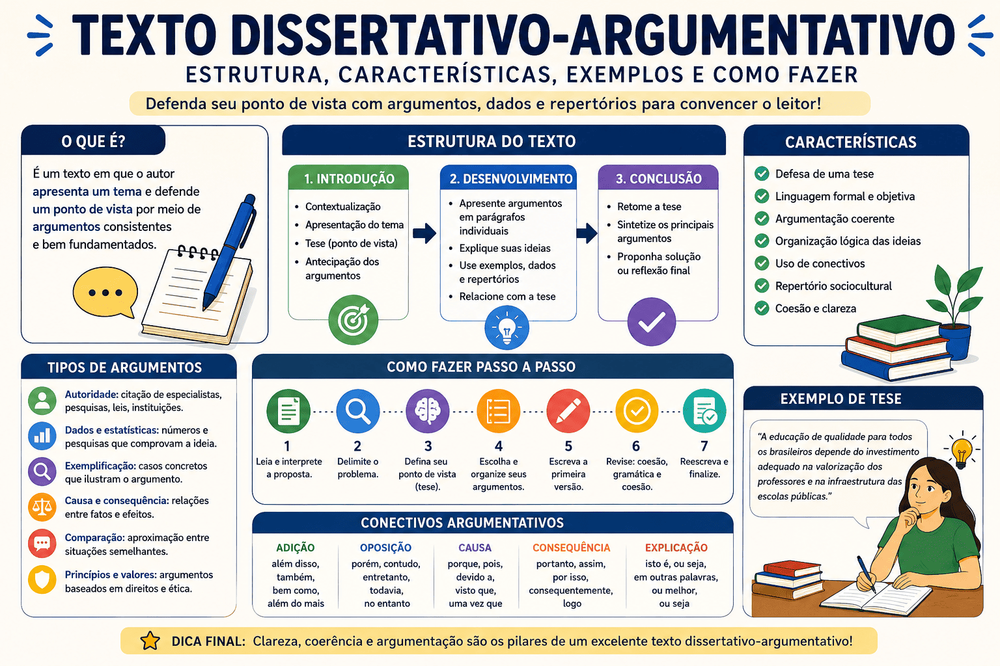

Texto Dissertativo-Argumentativo: estrutura, características, exemplos e como fazer
O texto dissertativo-argumentativo é uma produção escrita em que o autor apresenta uma reflexão sobre determinado tema e defende um ponto de vista por meio de argumentos, exemplos, dados, comparações e conhecimentos de diferentes áreas.
Esse tipo de texto é frequentemente solicitado em atividades escolares, vestibulares, concursos públicos e no Exame Nacional do Ensino Médio — ENEM. Para produzi-lo com qualidade, não basta apenas manifestar uma opinião: é necessário formular uma tese clara, selecionar argumentos consistentes e organizar as ideias de maneira coerente.
Neste conteúdo, você aprenderá o que é um texto dissertativo-argumentativo, quais são suas principais características, como elaborar a introdução, desenvolver os argumentos, construir a conclusão, utilizar repertórios socioculturais e revisar a redação.

O que é um texto dissertativo-argumentativo?
O texto dissertativo-argumentativo é uma produção que combina exposição de ideias e defesa de um posicionamento. O autor apresenta um tema, formula uma tese e procura demonstrar que essa perspectiva é válida por meio de argumentos bem organizados.
A palavra dissertar significa explicar, analisar ou discutir determinado assunto. Já argumentar significa apresentar razões capazes de sustentar uma ideia e convencer o leitor.
Em outras palavras: o texto dissertativo-argumentativo discute um tema e defende uma tese por meio de argumentos, exemplos, dados e repertórios.
Esse gênero não deve ser confundido com uma simples opinião pessoal. Frases como “eu acho isso errado” ou “na minha opinião, isso é importante” não são suficientes. O posicionamento precisa ser explicado, fundamentado e relacionado a informações relevantes.
Opinião sem argumentação
A leitura é muito importante para os jovens.
Opinião argumentada
A leitura é fundamental para a formação dos jovens, pois amplia o vocabulário, desenvolve a capacidade de interpretação e favorece a construção do pensamento crítico.
Qual é a finalidade do texto dissertativo-argumentativo?
A principal finalidade desse tipo de texto é apresentar uma análise e levar o leitor a reconhecer a validade do ponto de vista defendido. Para isso, o autor precisa demonstrar relações entre causas, consequências, problemas, exemplos e possíveis soluções.
O texto dissertativo-argumentativo pode ter diferentes objetivos:
- defender uma ideia ou posicionamento;
- analisar um problema social;
- explicar as causas de determinado fenômeno;
- avaliar consequências;
- questionar comportamentos, valores ou práticas sociais;
- propor soluções;
- convencer ou persuadir o leitor.
Características do texto dissertativo-argumentativo
Embora possa apresentar diferentes formas de organização, esse tipo de texto possui algumas características fundamentais.
| Característica | Explicação |
|---|---|
| Tema delimitado | O texto discute uma questão específica apresentada na proposta de produção. |
| Tese | Apresenta o posicionamento central que será defendido pelo autor. |
| Argumentação | Utiliza razões, fatos, exemplos, dados e conhecimentos para sustentar a tese. |
| Organização lógica | As ideias seguem uma sequência coerente e progressiva. |
| Linguagem formal | A escrita respeita a norma-padrão e evita marcas excessivas de oralidade. |
| Coesão | Os períodos e parágrafos são relacionados por conectivos e outros recursos linguísticos. |
| Conclusão | O texto encerra a discussão retomando a tese, sintetizando as ideias ou propondo uma solução. |
Predomínio da linguagem formal
Em provas, trabalhos acadêmicos e situações formais, o texto dissertativo-argumentativo deve ser escrito de acordo com a norma-padrão da Língua Portuguesa. Isso exige atenção à ortografia, à pontuação, à concordância, à regência e à construção dos períodos.
Também é recomendável evitar gírias, abreviações informais, expressões vagas, repetições desnecessárias e marcas excessivas de oralidade.
Estrutura do texto dissertativo-argumentativo
A estrutura mais utilizada é formada por três partes principais: introdução, desenvolvimento e conclusão.
Organização básica
- Introdução: apresentação do tema, contextualização e tese.
- Desenvolvimento: explicação e comprovação dos argumentos.
- Conclusão: encerramento do raciocínio e possível apresentação de solução.
Introdução
A introdução é o primeiro contato do leitor com a redação. Sua função é apresentar o tema, contextualizar o problema e indicar o posicionamento que será defendido.
Uma introdução pode conter:
- contextualização do tema;
- apresentação do problema;
- delimitação do assunto;
- formulação da tese;
- antecipação dos principais argumentos.
Exemplo de introdução
Embora as redes sociais tenham ampliado o acesso à informação e facilitado a comunicação, seu uso excessivo entre adolescentes pode prejudicar a saúde emocional e a qualidade das relações interpessoais. Esse problema é intensificado tanto pela busca constante por aprovação quanto pela comparação com padrões de vida idealizados.
Nesse exemplo, o tema é o uso excessivo das redes sociais entre adolescentes. A tese indica que esse comportamento pode prejudicar a saúde emocional, enquanto os dois argumentos são a busca por aprovação e a comparação com padrões idealizados.
Desenvolvimento
O desenvolvimento é a parte em que a tese é explicada e comprovada. Cada parágrafo deve apresentar um argumento central e desenvolvê-lo de maneira clara.
Estrutura de um parágrafo argumentativo
- Tópico frasal: apresentação da ideia principal do parágrafo.
- Explicação: aprofundamento do argumento.
- Comprovação: uso de exemplo, dado, repertório ou comparação.
- Análise: relação da informação apresentada com a tese.
Exemplo de parágrafo de desenvolvimento
Em primeiro lugar, a exposição constante às redes sociais pode aumentar a necessidade de aprovação externa. Ao publicar imagens e opiniões, muitos adolescentes passam a avaliar o próprio valor com base na quantidade de curtidas e comentários recebidos. Essa dinâmica torna a autoestima dependente da reação de outras pessoas e pode gerar ansiedade, insegurança e frustração.
Conclusão
A conclusão encerra o raciocínio desenvolvido. Ela deve manter relação com a tese e com os argumentos apresentados, sem introduzir uma discussão completamente nova.
A conclusão pode:
- retomar a tese;
- sintetizar os argumentos;
- apresentar uma reflexão final;
- fazer um alerta;
- propor uma solução;
- formular uma proposta de intervenção.
Exemplo de conclusão
Portanto, embora as redes sociais ofereçam benefícios comunicativos, seu uso desequilibrado pode comprometer o bem-estar emocional dos adolescentes. Para reduzir esses efeitos, escolas e famílias devem promover ações de educação digital, orientando os jovens sobre limites de uso, exposição responsável e valorização das relações fora do ambiente virtual.
Como fazer um texto dissertativo-argumentativo?
A produção de uma boa redação começa antes da escrita dos parágrafos. É necessário compreender a proposta, definir o posicionamento e planejar o desenvolvimento.
1. Leia e interprete a proposta
Antes de começar a escrever, identifique exatamente o que a proposta solicita. Observe o tema, o recorte temático, os textos de apoio, o gênero exigido e as instruções apresentadas.
Atenção: escrever sobre um assunto relacionado, mas diferente do recorte proposto, pode resultar em fuga parcial ou total ao tema.
2. Delimite o problema
Muitos temas são amplos. Por isso, é necessário identificar qual aspecto específico será discutido.
Tema amplo
Tecnologia.
Recorte temático
Impactos do uso excessivo das redes sociais na saúde mental dos adolescentes.
3. Defina seu posicionamento
Para estabelecer seu ponto de vista, faça perguntas sobre o tema:
- Qual é o principal problema envolvido?
- Quais são as causas desse problema?
- Quais consequências ele produz?
- Quem é afetado?
- Que posicionamento pode ser defendido?
- Quais soluções podem ser apresentadas?
4. Formule a tese
A tese deve responder diretamente ao tema e apresentar uma ideia que possa ser defendida ao longo da redação.
5. Selecione os argumentos
Escolha argumentos diferentes, mas complementares. Em uma estrutura com dois parágrafos de desenvolvimento, cada argumento deve ocupar um parágrafo.
6. Faça um projeto de texto
Exemplo de planejamento
Tema: uso excessivo das redes sociais entre adolescentes.
Tese: esse comportamento pode prejudicar a saúde emocional.
Argumento 1: dependência da aprovação externa.
Argumento 2: comparação com padrões de vida idealizados.
Conclusão: educação digital e acompanhamento familiar.
7. Escreva a primeira versão
Transforme o planejamento em parágrafos completos. Durante essa etapa, concentre-se na clareza das ideias, na relação entre os argumentos e na progressão do raciocínio.
8. Revise e reescreva
Ao finalizar, verifique o conteúdo, a organização e a linguagem. A revisão deve observar tanto os argumentos quanto os aspectos gramaticais.
O que é tese?
A tese é o posicionamento central defendido no texto. Ela funciona como uma resposta à questão apresentada pela proposta e orienta toda a argumentação.
Uma boa tese deve ser:
- clara;
- específica;
- relacionada ao tema;
- defensável;
- coerente com os argumentos;
- possível de ser desenvolvida dentro do limite da redação.
Tese vaga
A educação é muito importante para a sociedade.
Tese específica
A redução das desigualdades educacionais brasileiras depende da ampliação da infraestrutura escolar e da valorização dos profissionais da educação.
Modelos para formular uma tese
Modelo com duas causas:
O problema é agravado por [causa 1] e [causa 2].
Modelo com consequências:
Essa situação provoca [consequência 1] e [consequência 2].
Modelo avaliativo:
Embora [aspecto positivo], é necessário reconhecer que [problema central].
Modelo com solução:
A superação desse problema exige [medida 1] e [medida 2].
Esses modelos servem apenas como orientação. As frases devem ser adaptadas ao tema e não podem funcionar como estruturas decoradas utilizadas em qualquer redação.
Como desenvolver argumentos consistentes?
Argumentar não significa apenas apresentar uma afirmação. É necessário explicar por que ela é válida, como o problema acontece e quais consequências ele produz.
Argumento superficial
A falta de leitura prejudica os estudantes.
Argumento desenvolvido
A ausência do hábito de leitura limita o desenvolvimento linguístico dos estudantes, pois reduz o contato com diferentes estruturas sintáticas, gêneros textuais e formas de organização das ideias. Como consequência, muitos jovens apresentam dificuldades para interpretar enunciados e construir respostas mais elaboradas.
Perguntas que ajudam a aprofundar um argumento
- Por que isso acontece?
- Como esse problema se manifesta?
- Quem é prejudicado?
- Quais consequências são produzidas?
- Que exemplo comprova essa afirmação?
- Que conhecimento pode fundamentar a análise?
- Como esse argumento se relaciona com a tese?
Dica para a argumentação
Um argumento consistente combina afirmação, explicação, comprovação e análise. Não basta citar um dado ou autor; é necessário demonstrar a relação desse conhecimento com a tese.
Principais tipos de argumentos
Existem diferentes estratégias para fundamentar uma tese. A escolha depende do tema, dos conhecimentos do autor e do efeito que se deseja produzir.
| Tipo de argumento | Como funciona | Exemplo |
|---|---|---|
| Argumento de autoridade | Utiliza a ideia de um especialista, pesquisador ou instituição reconhecida. | Segundo determinado pesquisador, a leitura contribui para o desenvolvimento cognitivo. |
| Argumento por dados | Apresenta estatísticas, pesquisas ou informações quantitativas. | Dados de uma pesquisa podem demonstrar o crescimento de determinado problema. |
| Argumento por exemplificação | Apresenta um caso concreto que comprova a ideia defendida. | Projetos de leitura realizados em escolas podem ampliar o interesse dos estudantes. |
| Argumento de causa e consequência | Relaciona um fenômeno às suas origens ou aos seus efeitos. | A ausência de infraestrutura adequada reduz as condições de aprendizagem. |
| Argumento por comparação | Aproxima duas situações para destacar semelhanças ou diferenças. | Enquanto algumas escolas possuem laboratórios, outras não dispõem de recursos básicos. |
| Argumento histórico | Utiliza acontecimentos do passado para explicar uma situação atual. | A desigualdade educacional está relacionada à formação histórica excludente do país. |
| Argumento por princípio | Baseia-se em valores, direitos ou normas socialmente reconhecidas. | O acesso à educação é um direito fundamental e deve ser garantido a todos. |
| Contra-argumentação | Apresenta uma ideia contrária para depois contestá-la ou limitá-la. | Embora alguns afirmem que a tecnologia distrai os estudantes, seu uso planejado pode favorecer a aprendizagem. |
O que é repertório sociocultural?
O repertório sociocultural é um conhecimento externo utilizado para explicar, exemplificar ou comprovar um argumento.
Esse conhecimento pode ser retirado de diferentes áreas:
- História;
- Filosofia;
- Sociologia;
- Literatura;
- Cinema;
- Ciência;
- legislação;
- acontecimentos sociais;
- pesquisas e estatísticas.
Repertório produtivo
O repertório produtivo é aquele que está relacionado ao tema e contribui diretamente para o argumento. A simples citação de uma obra, autor ou conceito não fortalece o texto se não houver explicação.
Uso superficial
Paulo Freire defendia a importância da educação.
Uso desenvolvido
Ao defender uma educação baseada no diálogo e na formação crítica, Paulo Freire demonstra que o ensino não deve se limitar à transmissão mecânica de conteúdos. Essa perspectiva evidencia a necessidade de práticas escolares que permitam ao estudante compreender e transformar a realidade em que vive.
Evite: citações inventadas, dados sem fonte, referências imprecisas ou repertórios decorados que não se relacionem diretamente ao argumento.
Conectivos para texto dissertativo-argumentativo
Os conectivos estabelecem relações de sentido entre palavras, períodos e parágrafos. Eles contribuem para a coesão e ajudam o leitor a acompanhar o raciocínio.
| Relação de sentido | Conectivos |
|---|---|
| Adição | além disso, também, ainda, bem como, do mesmo modo |
| Oposição | porém, contudo, entretanto, todavia, por outro lado |
| Causa | porque, pois, visto que, devido a, em razão de |
| Consequência | por isso, assim, desse modo, consequentemente, de modo que |
| Exemplificação | por exemplo, como ocorre em, a título de exemplo, pode-se citar |
| Comparação | da mesma forma, assim como, de modo semelhante, enquanto |
| Explicação | isto é, ou seja, em outras palavras, isso significa que |
| Conclusão | portanto, logo, em síntese, em conclusão, diante disso |
| Prioridade | em primeiro lugar, inicialmente, antes de tudo, primeiramente |
| Continuidade | em segundo lugar, posteriormente, além do mais, nesse sentido |
Dica sobre conectivos
Não utilize conectivos apenas para iniciar todos os parágrafos. O mais importante é escolher expressões que representem corretamente a relação de sentido entre as ideias.
O texto dissertativo-argumentativo deve ser impessoal?
Em contextos escolares e acadêmicos, costuma-se recomendar uma linguagem mais impessoal, objetiva e formal. Isso significa evitar expressões como:
- “eu acho”;
- “na minha opinião”;
- “eu acredito que”;
- “todos nós sabemos”;
- “desde os primórdios da humanidade”.
A ausência dessas expressões não elimina o posicionamento do autor. A tese continua representando sua perspectiva, mas é apresentada de maneira mais objetiva.
Forma excessivamente pessoal
Eu acho que as escolas deveriam incentivar mais a leitura.
Forma mais objetiva
As escolas devem ampliar os projetos de incentivo à leitura.
Modelo de texto dissertativo-argumentativo
Introdução
[Contextualização do tema]. Nesse cenário, observa-se que [apresentação do problema]. Tal situação está relacionada a [argumento 1] e [argumento 2].
Desenvolvimento 1
Em primeiro lugar, [apresentação do argumento 1]. Isso ocorre porque [explicação]. Nesse sentido, [exemplo, dado ou repertório]. Dessa forma, [relação com a tese].
Desenvolvimento 2
Além disso, [apresentação do argumento 2]. Sob essa perspectiva, [explicação]. Como exemplo, [repertório ou situação concreta]. Consequentemente, [efeito relacionado ao problema].
Conclusão
Portanto, é necessário [retomada da tese]. Para isso, [agente ou responsável] deve [ação], por meio de [meio], com o objetivo de [finalidade].
Esse modelo apresenta apenas uma estrutura básica. As frases devem ser adaptadas ao tema, ao gênero exigido e aos argumentos selecionados.
Exemplo de texto dissertativo-argumentativo
Considere o seguinte tema:
Os desafios para a formação de leitores no Brasil.
Leitura e formação cidadã
A leitura desempenha papel essencial no desenvolvimento intelectual e social dos indivíduos, pois amplia o conhecimento, fortalece a interpretação e favorece a participação cidadã. Entretanto, a formação de leitores no Brasil ainda enfrenta obstáculos relacionados à desigualdade de acesso aos livros e à fragilidade das práticas de incentivo à leitura.
Em primeiro lugar, a dificuldade de acesso aos livros limita a construção do hábito de leitura. Em muitas comunidades, bibliotecas públicas são insuficientes, pouco atualizadas ou inexistentes, enquanto a aquisição frequente de obras pode representar um custo elevado para famílias de baixa renda. Assim, uma parcela da população tem poucas oportunidades de contato contínuo com diferentes gêneros e autores.
Além disso, o incentivo à leitura nem sempre ocorre de maneira significativa no ambiente escolar. Quando o contato com obras literárias se restringe à realização de provas e ao preenchimento de fichas, a leitura pode ser percebida apenas como uma obrigação. Projetos de rodas de conversa, clubes de leitura e escolhas orientadas de livros podem tornar essa experiência mais participativa e próxima dos interesses dos estudantes.
Portanto, ampliar a formação de leitores exige ações que democratizem o acesso aos livros e transformem as práticas de leitura. Para isso, o poder público deve investir na criação e modernização de bibliotecas, enquanto as escolas devem desenvolver projetos permanentes de leitura, com mediação dos professores e participação dos estudantes, a fim de fortalecer a autonomia intelectual e a formação cidadã.
Análise do exemplo
| Parte do texto | Função desempenhada |
|---|---|
| Introdução | Contextualiza a importância da leitura e apresenta dois obstáculos. |
| Desenvolvimento 1 | Discute a desigualdade de acesso aos livros. |
| Desenvolvimento 2 | Analisa a fragilidade das práticas escolares de incentivo. |
| Conclusão | Retoma o problema e propõe ações para bibliotecas e escolas. |
Diferença entre dissertação expositiva e argumentativa
Dissertação expositiva
Apresenta informações, conceitos e explicações sobre determinado assunto.
Sua principal finalidade é informar ou explicar.
Não exige necessariamente a defesa de uma tese.
Dissertação argumentativa
Apresenta informações e defende um posicionamento sobre determinado tema.
Sua principal finalidade é convencer o leitor.
Exige uma tese sustentada por argumentos.
Exposição: apresenta as características e o funcionamento das redes sociais.
Argumentação: defende que o uso excessivo das redes sociais exige medidas de educação digital.
Erros comuns no texto dissertativo-argumentativo
1. Não apresentar uma tese
Um texto que apenas descreve ou explica o assunto não cumpre plenamente a função argumentativa. O leitor precisa identificar qual posicionamento está sendo defendido.
2. Repetir o tema sem aprofundá-lo
Reescrever a proposta com palavras diferentes não significa desenvolver uma argumentação. É necessário explicar causas, consequências, exemplos e relações.
3. Apresentar argumentos superficiais
Afirmações genéricas como “isso é ruim para a sociedade” precisam ser explicadas e comprovadas.
4. Acumular repertórios sem análise
Citar vários autores, obras ou acontecimentos não torna a redação automaticamente mais consistente. Cada referência deve contribuir para a construção do argumento.
5. Contradizer a própria tese
Os argumentos e a conclusão devem manter coerência com o posicionamento apresentado na introdução.
6. Usar conectivos inadequados
Utilizar “portanto” quando não há conclusão ou “entretanto” quando não existe oposição prejudica a relação lógica entre as ideias.
7. Criar parágrafos muito longos
Parágrafos excessivamente extensos podem reunir várias ideias sem organização. Cada parágrafo deve desenvolver um núcleo argumentativo principal.
8. Introduzir um novo argumento na conclusão
A conclusão deve encerrar o raciocínio, e não iniciar uma discussão que não foi desenvolvida anteriormente.
9. Usar frases prontas e genéricas
Expressões decoradas podem tornar o texto artificial e dificultar sua adaptação ao tema.
10. Não revisar a redação
A ausência de revisão permite a permanência de erros de escrita, repetição de palavras, incoerências e períodos incompletos.
O texto dissertativo-argumentativo no ENEM
Na redação do ENEM, o participante deve produzir um texto dissertativo-argumentativo em modalidade escrita formal da Língua Portuguesa sobre um tema de ordem social, científica, cultural ou política.
Além de apresentar uma tese e desenvolver argumentos, a redação deve incluir uma proposta de intervenção relacionada ao problema discutido e respeitar os direitos humanos.
As cinco competências avaliadas no ENEM
| Competência | O que avalia |
|---|---|
| Competência 1 | Domínio da modalidade escrita formal da Língua Portuguesa. |
| Competência 2 | Compreensão do tema, atendimento ao gênero e uso de repertório sociocultural. |
| Competência 3 | Seleção, organização e interpretação de informações e argumentos. |
| Competência 4 | Uso dos mecanismos linguísticos necessários à construção da argumentação. |
| Competência 5 | Elaboração de uma proposta de intervenção para o problema abordado. |
Elementos da proposta de intervenção
- Agente: quem realizará a ação.
- Ação: o que será feito.
- Meio ou modo: como a ação será realizada.
- Finalidade: qual resultado se pretende alcançar.
- Detalhamento: informação adicional que torna a proposta mais específica.
Agente: Ministério da Educação.
Ação: ampliar projetos de incentivo à leitura.
Meio: por meio do financiamento de bibliotecas e da formação de mediadores.
Finalidade: democratizar o acesso aos livros.
Detalhamento: com prioridade para escolas localizadas em regiões socialmente vulneráveis.
Checklist para revisar o texto
- O texto atende ao tema proposto?
- A tese está clara?
- Os argumentos são diferentes e coerentes?
- Cada parágrafo apresenta uma ideia principal?
- Os exemplos e repertórios foram explicados?
- Os argumentos estão relacionados à tese?
- Há progressão entre os parágrafos?
- Os conectivos foram utilizados corretamente?
- A conclusão retoma a discussão?
- A proposta de intervenção está completa, quando exigida?
- Há palavras repetidas em excesso?
- Existem erros de ortografia, pontuação ou concordância?
Questão comentada
Questão 1
A principal característica que diferencia um texto dissertativo-argumentativo de um texto apenas expositivo é:
A) o uso obrigatório de personagens e narrador.
B) a descrição detalhada de lugares e objetos.
C) a defesa de uma tese por meio de argumentos.
D) a apresentação de versos e estrofes.
E) o emprego exclusivo da primeira pessoa.
Ver resposta comentada
Resposta: C. O texto dissertativo-argumentativo não se limita a informar ou explicar determinado assunto. Ele apresenta um posicionamento central e utiliza argumentos para sustentá-lo.
Proposta de produção textual
Produza um texto dissertativo-argumentativo sobre o seguinte tema:
Os desafios para combater a desinformação nas redes sociais.
Em seu texto:
- apresente uma tese clara;
- desenvolva pelo menos dois argumentos;
- utilize informações ou repertórios pertinentes;
- organize as ideias com conectivos adequados;
- elabore uma conclusão coerente;
- apresente uma proposta de intervenção, caso esteja seguindo o modelo do ENEM.
Resumo sobre o texto dissertativo-argumentativo
- O texto dissertativo-argumentativo apresenta uma discussão e defende uma tese.
- Sua estrutura básica é formada por introdução, desenvolvimento e conclusão.
- A introdução apresenta o tema, a contextualização e o posicionamento.
- O desenvolvimento explica e comprova os argumentos.
- A conclusão encerra a discussão e pode apresentar uma solução.
- Uma boa argumentação utiliza explicações, exemplos, dados e repertórios.
- Os conectivos estabelecem relações de sentido entre as ideias.
- No ENEM, a redação deve apresentar uma proposta de intervenção.
- A revisão é essencial para identificar problemas de conteúdo e linguagem.
Perguntas frequentes sobre texto dissertativo-argumentativo
O que é um texto dissertativo-argumentativo?
É um texto que apresenta uma reflexão sobre determinado tema e defende uma tese por meio de argumentos, exemplos, dados, repertórios e outras estratégias de convencimento.
Qual é a estrutura do texto dissertativo-argumentativo?
A estrutura básica é formada por introdução, desenvolvimento e conclusão. A introdução apresenta o tema e a tese, o desenvolvimento reúne os argumentos e a conclusão encerra a discussão.
O que é tese?
A tese é o posicionamento central defendido no texto. Ela indica a perspectiva do autor sobre o problema apresentado e orienta a seleção dos argumentos.
Onde a tese deve aparecer?
Em produções escolares e redações de vestibulares, a tese costuma aparecer na introdução, geralmente depois da contextualização do tema.
Quantos argumentos devem ser utilizados?
Não existe uma quantidade obrigatória. Em uma redação organizada em quatro parágrafos, dois argumentos bem desenvolvidos costumam ser suficientes.
Quantos parágrafos o texto deve ter?
Não há um número único obrigatório. Uma estrutura comum apresenta quatro parágrafos: introdução, dois desenvolvimentos e conclusão.
Como começar um texto dissertativo-argumentativo?
O texto pode começar com uma contextualização histórica, uma definição, um dado, uma comparação, uma referência cultural ou a apresentação direta do problema.
Como desenvolver um argumento?
Apresente uma ideia central, explique-a, utilize um exemplo ou repertório e demonstre sua relação com a tese.
O que é tópico frasal?
É a frase que apresenta a ideia principal de um parágrafo. Ela orienta as explicações, os exemplos e as análises desenvolvidas em seguida.
É obrigatório usar repertório?
A exigência depende da proposta. No entanto, repertórios pertinentes podem fortalecer a argumentação quando são explicados e relacionados à tese.
O que é repertório produtivo?
É um conhecimento externo relevante para o tema, utilizado de maneira articulada para explicar ou comprovar um argumento.
Pode usar primeira pessoa?
Isso depende do gênero e da proposta. Em textos escolares e no modelo do ENEM, costuma-se preferir uma linguagem mais impessoal e objetiva.
Pode usar “eu acho” na redação?
Em textos formais, é recomendável substituir expressões como “eu acho” por afirmações diretas e fundamentadas.
Qual é a diferença entre tema e tese?
O tema é o assunto discutido. A tese é o posicionamento específico que o autor defende sobre esse assunto.
Qual é a diferença entre dissertação expositiva e argumentativa?
A dissertação expositiva apresenta informações e explicações. A argumentativa, além de informar, defende um posicionamento por meio de argumentos.
Como concluir o texto?
A conclusão deve retomar o problema e a tese, sintetizar o raciocínio ou apresentar uma proposta de solução relacionada aos argumentos.
É obrigatório apresentar uma solução?
Nem todo texto dissertativo-argumentativo exige uma solução. No ENEM, porém, a proposta de intervenção é obrigatória.
O que não pode faltar na redação do ENEM?
Atendimento ao tema, tese, argumentos, coesão, domínio da linguagem formal e proposta de intervenção relacionada ao problema e respeitosa aos direitos humanos.
Como melhorar a argumentação?
Explique as afirmações, relacione causas e consequências, utilize exemplos pertinentes e demonstre como cada argumento contribui para comprovar a tese.
Como revisar um texto dissertativo-argumentativo?
Verifique a adequação ao tema, a clareza da tese, o desenvolvimento dos argumentos, a progressão entre os parágrafos, os conectivos e os aspectos gramaticais.
Conclusão
Produzir um bom texto dissertativo-argumentativo exige planejamento, clareza e capacidade de relacionar informações. A qualidade da redação depende menos do uso de palavras difíceis e mais da construção de uma tese objetiva, de argumentos bem explicados e de uma organização coerente.
Com a prática, o estudante aprende a analisar propostas, selecionar repertórios, estruturar parágrafos e aprofundar o raciocínio. Por isso, escrever, revisar e reescrever são etapas indispensáveis para desenvolver a competência argumentativa.
Referências
- ANTUNES, Irandé. Lutar com palavras: coesão e coerência. São Paulo: Parábola Editorial.
- FIORIN, José Luiz. Argumentação. São Paulo: Contexto.
- GARCIA, Othon Moacyr. Comunicação em prosa moderna. Rio de Janeiro: Fundação Getulio Vargas.
- KOCH, Ingedore Villaça; ELIAS, Vanda Maria. Escrever e argumentar. São Paulo: Contexto.
- KOCH, Ingedore Villaça; TRAVAGLIA, Luiz Carlos. A coerência textual. São Paulo: Contexto.
Conteúdos relacionados
Explore Outros Conteúdos
Continue seus estudos acessando outras seções do site Mestre Kira: